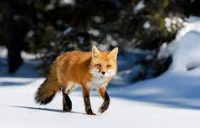

Khunjerab National Park is Pakistan’s third largest National Park. The park is adjacent
to Taxkorgan Natural Reserve (1,400,000ha) in China. This park was created on 29 April 1975 by the late
Zulfikar Ali Bhutto on the recommendation of Wildlife biologist Dr. George Schaller. Over half of the park
is above 4,000m. Khunjerab Pass, the gateway to China via the Karakoram Highway, is at 4,934m.
Wild Life:
The primary purpose of setting up of this park was to provide protection to the endangered Marco polo sheep,
which is only found in this area in Pakistan. According to the Mir of Hunza, the population was around 400
but had dropped to below 180 by the time of the completion of the Karakoram Highway. A herd of almost 75
Marco Polo sheep was recorded in the spring of 1984 and park staff saw at least 50 crossing the Pass in May
1989. The park is also famous for its Snow Leopards. Some reports say that it might contain the highest
density of these beautiful cats in the total Himalayan ecosystem which is the natural habitat of these cats.
Over 2,000 Siberian ibex, widely distributed and abundant in the park but absent from neighbouring China are
also present here.
Mammals:
Mammals in the park include Snow leopard, Himalayan Ibex, Brown bear, Tibetan red fox, Tibetan wolf, Blue
Sheep, Marcopolo Sheep, Tibetan wild ass or Kiang, Ermine, Alpine weasle, Stone Martin, Golden Marmot, Lynx,
Large-eared Pika, Dhole, Cape hare, Common field mouse, Royle’s mountain vole, Lesser shrew and Migratory
hamster.

Tibetan red fox
The Tibetan fox (Vulpes ferrilata), also known as the Tibetan sand fox, is a species of true fox endemic to the high Tibetan Plateau, Ladakh plateau, Nepal, China, Sikkim, and Bhutan, up to elevations of about 5,300 m (17,400 ft). It is listed as Least Concern in the IUCN Red List, on account of its widespread range in the Tibetan Plateau's steppes and semi-deserts

Blue Sheep
The bharal (Pseudois nayaur), also called the blue sheep, is a caprine native to the high Himalayas. It is the only member of the genus Pseudois.[3] It occurs in India, Bhutan, China (in Gansu, Ningxia, Sichuan, Tibet, and Inner Mongolia), Myanmar, Nepal, and Pakistan.[1] The Helan Mountains of Ningxia have the highest concentration of bharal in the world, with 15 bharals per km2 and 30,000 in total.

Lynx
A lynx is any of the four extant species (the Canada lynx, Iberian lynx, Eurasian lynx and the bobcat) within the medium-sized wild cat genus Lynx. The name originated in Middle English via Latin from the Greek word lynx (λύγξ), derived from the Indo-European root leuk- ("light", "brightness"), in reference to the luminescence of its reflective eyes.

Golden marmot
The long-tailed marmot (Marmota caudata) or golden marmot is a marmot species in the family Sciuridae. It occurs in mountainous regions in the central parts of Asia where it lives in open or lightly wooded habitats, often among rocks where dwarf junipers grow.It is IUCN Red Listed as Least Concern. As suggested by its name, it is a relatively long-tailed species of marmot.
Birds:
Common birds in the park are Lammegier vulture, Golden eagle, Himalayan griffon vulture, Eurasian black
vulture, Marsh harrier, Eurasian sparrow hawk, Eurasian kestrel, Lesser kestrel, Saker falcon, Peregrine
falcon, Himalayan Snow cock, Snow partridge, Chukar, Grey heron, Common sandpiper, Hill pigeon, Snow pigeon,
Northern eagle owl, Eurasian cuckoo, Common swallow, Magpie, Alpine cough and Raven.

Golden eagle
The golden eagle is a bird of prey living in the Northern Hemisphere. It is the most widely distributed species of eagle. Like all eagles, it belongs to the family Accipitridae. They are one of the best-known birds of prey in the Northern Hemisphere. These birds are dark brown, with lighter golden-brown plumage on their napes. Immature eagles of this species typically have white on the tail and often have white markings on the wings.

Bearded vulture
The bearded vulture (Gypaetus barbatus), also known as the lammergeier and ossifrage, is a very large bird of prey in the monotypic genus Gypaetus. Traditionally considered an Old World vulture, it actually forms a separate minor lineage of Accipitridae together with the Egyptian vulture (Neophron percnopterus), its closest living relative. It is not much more closely related to the Old World vultures proper than to, for example, hawks, and differs from the former by its feathered neck.

Eurasian sparrow hawk
The Eurasian sparrowhawk (Accipiter nisus), also known as the northern sparrowhawk or simply the sparrowhawk, is a small bird of prey in the family Accipitridae. Adult male Eurasian sparrowhawks have bluish grey upperparts and orange-barred underparts; females and juveniles are brown above with brown barring below. The female is up to 25% larger than the male – one of the greatest size differences between the sexes in any bird species.

Snow partridge
The snow partridge (Lerwa lerwa) is a gamebird in the pheasant family Phasianidae found widely distributed across the high-altitude Himalayan regions of Pakistan, China, India and Nepal. It is the only species within its genus, and is thought to be the most basal member of the "erectile clade" of the subfamily Phasianinae. The species is found in alpine pastures and open hillside above the treeline but not in as bare rocky terrain as the Himalayan snowcock and is not as wary as that species.